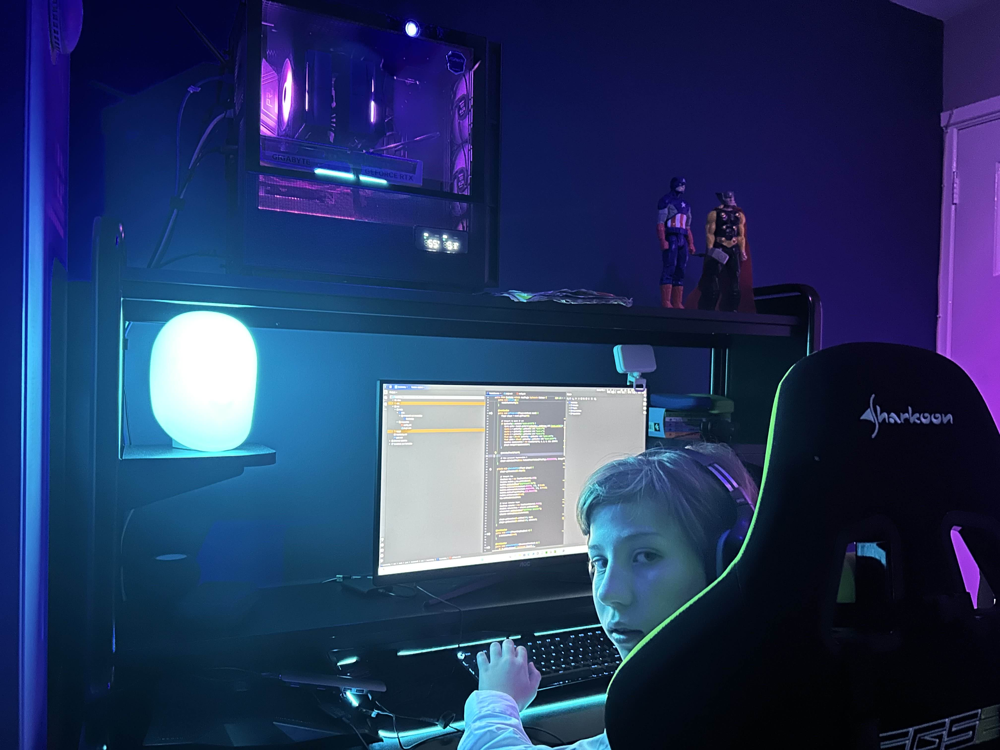

Bram Wijnen
I'm a 13-year-old developer who builds high-performance Minecraft plugins and automation tools.
I've contributed to popular servers like Blitz SMP, LaternMC, and Peak SMP.
I create scalable systems with Java, JavaScript, Docker, and Karate for testing. I also build Discord bots for custom automation.

Experience
CEO — BramCraft Network
Custom plugin development, server hosting, and full-stack SMP leadership.
Developer — RagePVP
Custom combat systems and Dockerized infrastructure for high-load PvP environments.
Developer — Skyhaven
Worked on performance tuning, gameplay design, and backend plugin systems.
Plugin Developer — Blitz SMP
Optimized backend features and balance systems for 750+ players.
Plugin Developer — LaternMC
Created advanced plugins and helped scale server infrastructure.
Plugin Developer — Peak SMP
Delivered scalable features with Java and Docker for large multiplayer networks.